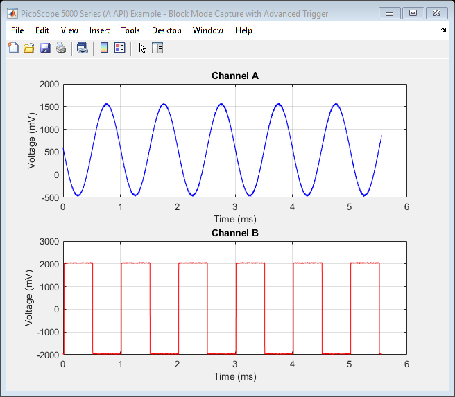

PicoScope 5000 Series (A API) Instrument Driver Oscilloscope Block Data with Advanced Trigger Capture Example
This is an example of an instrument control session using a device object. The instrument control session comprises all the steps you are likely to take when communicating with your instrument.
These steps are:
- Create a device object
- Connect to the instrument
- Configure properties
- Invoke functions
- Disconnect from the instrument
To run the instrument control session, type the name of the file, PS5000A_ID_Block_Adv_Trig_Example, at the MATLAB command prompt.
The file, PS5000A_ID_BLOCK_ADV_TRIG_EXAMPLE.M must be on your MATLAB PATH. For additional information on setting your MATLAB PATH, type 'help addpath' at the MATLAB command prompt.
Example: PS5000A_ID_Block_Adv_Trig_Example;
Description: Demonstrates how to call functions in order to capture a block of data from a PicoScope 5000 Series oscilloscope using an advanced trigger.
Copyright: © 2017-2019 Pico Technology Ltd. See LICENSE file for terms.
Contents
- Suggested input test signals
- Clear command window and close any figures
- Load configuration information
- Device connection
- Set channels
- Set device resolution
- Verify timebase index and maximum number of samples
- Setup trigger using advanced functions
- Set block parameters and capture data
- Process data
- Stop the device
- Disconnect device
Suggested input test signals
This example used the following test signals:
- Channel A: 2 Vpp with ±500 mV offset, 2 kHz sine wave
- Channel B: 4 Vpp, 1 kHz square wave
Clear command window and close any figures
clc;
close all;
Load configuration information
DO NOT EDIT THIS LINE.
[ps5000aStructs, ps5000aEnuminfo] = ps5000aSetConfig();
Device connection
% Check if an Instrument session using the device object |ps5000aDeviceObj| % is still open, and if so, disconnect if the User chooses 'Yes' when prompted. if (exist('ps5000aDeviceObj', 'var') && ps5000aDeviceObj.isvalid && strcmp(ps5000aDeviceObj.status, 'open')) openDevice = questionDialog(['Device object ps5000aDeviceObj has an open connection. ' ... 'Do you wish to close the connection and continue?'], ... 'Device Object Connection Open'); if (openDevice == PicoConstants.TRUE) % Close connection to device. disconnect(ps5000aDeviceObj); delete(ps5000aDeviceObj); else % Exit script if User selects 'No'. return; end end % Create a device object. ps5000aDeviceObj = icdevice('picotech_ps5000a_generic', ''); % Connect device object to hardware. connect(ps5000aDeviceObj);
PicoScope 5000 Series (A API) MATLAB Instrument Driver
Copyright © 2013-2019 Pico Technology Ltd. All rights reserved.
Number of units found: 1
Serial number(s): FY985/0001
Opening PicoScope 5000 Series (A API) device...
Instrument Device Object Using Driver : picotech_ps5000a_generic.mdd
Instrument Information
Type: Oscilloscope
Manufacturer: Pico Technology Ltd.
Model: PicoScope 5000A, 5000B and 5000D Series
Driver Information
DriverType: MATLAB generic
DriverName: picotech_ps5000a_generic.mdd
DriverVersion: 2.2.17.58
Communication State
Status: open
Default Channel Setup:-
-----------------------
Channel A:-
Enabled: True
Coupling: DC
Range: 5 V
Analog offset: 0.0 V
Channel B:-
Enabled: True
Coupling: DC
Range: 5 V
Analog offset: 0.0 V
Turning off Equivalent Time Sampling...
Equivalent Time Sampling turned off.
Turning off trigger...
Trigger turned off.
Default Block mode parameters:-
Timebase index : 65
Time Interval: 504 ns
Number of pre-trigger samples: 0
Number of post-trigger samples: 10000
Total number of samples: 10000
Default Streaming mode parameters:-
Streaming interval: 1.00e-06 s
Streaming auto stop: 1
Default Signal generator parameters:-
Start frequency: 1000 Hz
Stop frequency: 1000 Hz
Connected to PicoScope 5000 Series (A API) device:-
Instrument Model: 5444D
Batch/Serial Number: FY985/0001
USB Version: 3.0
Analog Channels: 4
Resolution: 8 bits
Bandwidth: 200 MHz
Buffer Memory: 512 MS
Maximum Sampling Rate: 1 GS/s
Signal Generator Type: Arbitrary Waveform Generator
5 V Power Supply connected: False
Set channels
Default driver settings applied to channels are listed below - use the Instrument Driver's ps5000aSetChannel() function to turn channels on or off and set voltage ranges, coupling, as well as analog offset.
% In this example, data is collected on channels A and B. If it is a % 4-channel model, channels C and D will be switched off if the power % supply is connected. % Channels : 0 - 1 (ps5000aEnuminfo.enPS5000AChannel.PS5000A_CHANNEL_A & PS5000A_CHANNEL_B) % Enabled : 1 (PicoConstants.TRUE) % Type : 1 (ps5000aEnuminfo.enPS5000ACoupling.PS5000A_DC) % Range : 8 (ps5000aEnuminfo.enPS5000ARange.PS5000A_5V) % Analog Offset : 0.0 V % Channels : 2 - 3 (ps5000aEnuminfo.enPS5000AChannel.PS5000A_CHANNEL_C & PS5000A_CHANNEL_D) % Enabled : 0 (PicoConstants.FALSE) % Type : 1 (ps5000aEnuminfo.enPS5000ACoupling.PS5000A_DC) % Range : 8 (ps5000aEnuminfo.enPS5000ARange.PS5000A_5V) % Analog Offset : 0.0 V % Find current power source [status.currentPowerSource] = invoke(ps5000aDeviceObj, 'ps5000aCurrentPowerSource'); if (ps5000aDeviceObj.channelCount == PicoConstants.QUAD_SCOPE && status.currentPowerSource == PicoStatus.PICO_POWER_SUPPLY_CONNECTED) [status.setChC] = invoke(ps5000aDeviceObj, 'ps5000aSetChannel', 2, 0, 1, 8, 0.0); [status.setChD] = invoke(ps5000aDeviceObj, 'ps5000aSetChannel', 3, 0, 1, 8, 0.0); end
Set device resolution
% Max. resolution with 2 channels enabled is 15 bits. [status.resolution, resolution] = invoke(ps5000aDeviceObj, 'ps5000aSetDeviceResolution', 15);
ps5000aSetDeviceResolution: Device resolution set to 15 bits.
Verify timebase index and maximum number of samples
Use the ps5000aGetTimebase2() function to query the driver as to the suitability of using a particular timebase index and the maximum number of samples available in the segment selected, then set the timebase property if required.
To use the fastest sampling interval possible, enable one analog channel and turn off all other channels.
Use a while loop to query the function until the status indicates that a valid timebase index has been selected. In this example, the timebase index of 65 is valid.
% Initial call to ps5000aGetTimebase2() with parameters: % % timebase : 65 % segment index : 0 status.getTimebase2 = PicoStatus.PICO_INVALID_TIMEBASE; timebaseIndex = 65; while (status.getTimebase2 == PicoStatus.PICO_INVALID_TIMEBASE) [status.getTimebase2, timeIntervalNanoseconds, maxSamples] = invoke(ps5000aDeviceObj, ... 'ps5000aGetTimebase2', timebaseIndex, 0); if (status.getTimebase2 == PicoStatus.PICO_OK) break; else timebaseIndex = timebaseIndex + 1; end end fprintf('Timebase index: %d, sampling interval: %d ns\n', timebaseIndex, timeIntervalNanoseconds); % Configure the device object's |timebase| property value. set(ps5000aDeviceObj, 'timebase', timebaseIndex);
Timebase index: 65, sampling interval: 504 ns
Setup trigger using advanced functions
Set up the device to trigger if the trigger condition on channel A OR the trigger condition on channel B is met. Use an auto-timeout of 5 seconds if the trigger condition is not met in that time.
% Trigger properties and functions are located in the Instrument % Driver's Trigger group. triggerGroupObj = get(ps5000aDeviceObj, 'Trigger'); triggerGroupObj = triggerGroupObj(1);
Trigger conditions
Specify which channels to trigger on.
% Create a MATLAB structure corresponding to the |tPS5000ACondition| struct % defined in the |ps5000aStructs| struct in order to define the trigger % conditions for each channel. % Use an array of structures to specify an AND condition e.g. trigger on % channel A AND channel B. ChATriggerConditions.source = ps5000aEnuminfo.enPS5000AChannel.PS5000A_CHANNEL_A; ChATriggerConditions.condition = ps5000aEnuminfo.enPS5000ATriggerState.PS5000A_CONDITION_TRUE; % Clear any pre-existing trigger configurations that may have been set. info = ps5000aEnuminfo.enPS5000AConditionsInfo.PS5000A_CLEAR + ps5000aEnuminfo.enPS5000AConditionsInfo.PS5000A_ADD; % Set the condition for channel A [status.ps5000aSetTriggerChannelConditionsV2ChA] = invoke(triggerGroupObj, 'ps5000aSetTriggerChannelConditionsV2', ChATriggerConditions, info); % Create another MATLAB structure to define the condition for channel B. ChBTriggerConditions.source = ps5000aEnuminfo.enPS5000AChannel.PS5000A_CHANNEL_B; ChBTriggerConditions.condition = ps5000aEnuminfo.enPS5000ATriggerState.PS5000A_CONDITION_TRUE; % Add the condition to the trigger conditions setup in order to setup a % trigger when the condition on channel A OR the condition on channel B is % met. info = ps5000aEnuminfo.enPS5000AConditionsInfo.PS5000A_ADD; [status.setTriggerChannelConditionsV2ChA] = invoke(triggerGroupObj, 'ps5000aSetTriggerChannelConditionsV2', ChBTriggerConditions, info);
Trigger directions
Set the direction on which to trigger for each channel.
% Create an array of MATLAB structures corresponding to the % |tPS5000ADirection| structure in the |ps5000aStructs| struct. Each % structure in the array defines the direction on which to trigger and also % if it is a level (edge) or window trigger. TriggerDirections(1).source = ps5000aEnuminfo.enPS5000AChannel.PS5000A_CHANNEL_A; TriggerDirections(1).direction = ps5000aEnuminfo.enPS5000AThresholdDirection.PS5000A_RISING; TriggerDirections(1).mode = ps5000aEnuminfo.enPS5000AThresholdMode.PS5000A_LEVEL; TriggerDirections(2).source = ps5000aEnuminfo.enPS5000AChannel.PS5000A_CHANNEL_B; TriggerDirections(2).direction = ps5000aEnuminfo.enPS5000AThresholdDirection.PS5000A_FALLING; TriggerDirections(2).mode = ps5000aEnuminfo.enPS5000AThresholdMode.PS5000A_LEVEL; [status.setTriggerChannelDirectionsV2] = invoke(triggerGroupObj, 'ps5000aSetTriggerChannelDirectionsV2', TriggerDirections);
Trigger properties
Set up the trigger thresholds for each channel.
% Specify the threshold values to use in millivolts. As the % |PS5000A_RISING| and |PS5000A_FALLING| enumerations have been specified % for the trigger directions, the upper threshold values will be used. TriggerChannelChannelProperties(1).thresholdUpper = 1000; TriggerChannelChannelProperties(1).thresholdUpperHysteresis = 50; TriggerChannelChannelProperties(1).thresholdLower = 1000; TriggerChannelChannelProperties(1).thresholdLowerHysteresis = 50; TriggerChannelChannelProperties(1).channel = ps5000aEnuminfo.enPS5000AChannel.PS5000A_CHANNEL_A; TriggerChannelChannelProperties(2).thresholdUpper = 500; TriggerChannelChannelProperties(2).thresholdUpperHysteresis = 50; TriggerChannelChannelProperties(2).thresholdLower = 500; TriggerChannelChannelProperties(2).thresholdLowerHysteresis = 50; TriggerChannelChannelProperties(2).channel = ps5000aEnuminfo.enPS5000AChannel.PS5000A_CHANNEL_B; [status.setTriggerChannelPropertiesV2] = invoke(triggerGroupObj, 'ps5000aSetTriggerChannelPropertiesV2', TriggerChannelChannelProperties);
Set auto trigger
The device will automatically trigger if the trigger condition has not been met within 5 sesconds.
[status.autoTriggerUs] = invoke(triggerGroupObj, 'ps5000aSetAutoTriggerMicroSeconds', 5e6);
Set block parameters and capture data
Capture a block of data and retrieve data values for channels A and B.
% Block data acquisition properties and functions are located in the % Instrument Driver's Block group. blockGroupObj = get(ps5000aDeviceObj, 'Block'); blockGroupObj = blockGroupObj(1); % Set pre-trigger and post-trigger samples as required - the total of this % should not exceed the value of |maxSamples| returned from the call to % |ps5000aGetTimebase2()|. The number of pre-trigger samples is set in this % example but default of 10000 post-trigger samples is used. % Set pre-trigger samples. numPreTriggerSamples = 1024; set(ps5000aDeviceObj, 'numPreTriggerSamples', numPreTriggerSamples);
This example uses the runBlock() function in order to collect a block of data - if other code needs to be executed while waiting for the device to indicate that it is ready, use the ps5000aRunBlock() function and poll the ps5000aIsReady() function.
% Capture a block of data: % % segment index: 0 (The buffer memory is not segmented in this example) [status.runBlock] = invoke(blockGroupObj, 'runBlock', 0); % Retrieve data values: startIndex = 0; segmentIndex = 0; downsamplingRatio = 1; downsamplingRatioMode = ps5000aEnuminfo.enPS5000ARatioMode.PS5000A_RATIO_MODE_NONE; % Provide additional output arguments for other channels e.g. chC for % channel C if using a 4-channel PicoScope. [numSamples, overflow, chA, chB] = invoke(blockGroupObj, 'getBlockData', startIndex, segmentIndex, ... downsamplingRatio, downsamplingRatioMode);
runBlock:- Collecting block of data: Timebase: 65 Pre-trigger samples: 1024 Post-trigger samples: 10000 runBlock: Waiting for device to become ready... runBlock: Device ready. getBlockData: Setting up data buffers... getBlockData: Retrieving data... getBlockData: Assigning analog data to array and converting to millivolts. getBlockData: Data succesfully retrieved.
Process data
In this example the data values returned from the device are displayed in plots in a Figure.
figure1 = figure('Name','PicoScope 5000 Series (A API) Example - Block Mode Capture with Advanced Trigger', ... 'NumberTitle', 'off', 'Position', [100, 100, 640, 480]); movegui(figure1, 'center'); % Calculate time (nanoseconds) and convert to milliseconds. % Use |timeIntervalNanoseconds| output from the |ps5000aGetTimebase2()| % function or calculate it using the main Programmer's Guide. % Take into account the downsampling ratio used. timeNs = double(timeIntervalNanoseconds) * double(0:numSamples - 1); timeMs = timeNs / 1e6; % Obtain trigger point triggerIndex = get(ps5000aDeviceObj, 'numPreTriggerSamples') + 1; % Channel A axisHandleChA = subplot(2,1,1); plot(timeMs, chA, 'b'); hold on; title('Channel A'); xlabel(axisHandleChA, 'Time (ms)'); ylabel(axisHandleChA, 'Voltage (mV)'); grid on; hold off; % Channel B axisHandleChB = subplot(2,1,2); plot(timeMs, chB, 'r'); title('Channel B'); xlabel(axisHandleChB, 'Time (ms)'); ylabel(axisHandleChB, 'Voltage (mV)'); grid on; hold off;
Stop the device
[status.stop] = invoke(ps5000aDeviceObj, 'ps5000aStop');
Disconnect device
Disconnect device object from hardware.
disconnect(ps5000aDeviceObj); delete(ps5000aDeviceObj);
Connection to PicoScope 5444D with serial number FY985/0001 closed successfully. Libraries unloaded successfully.